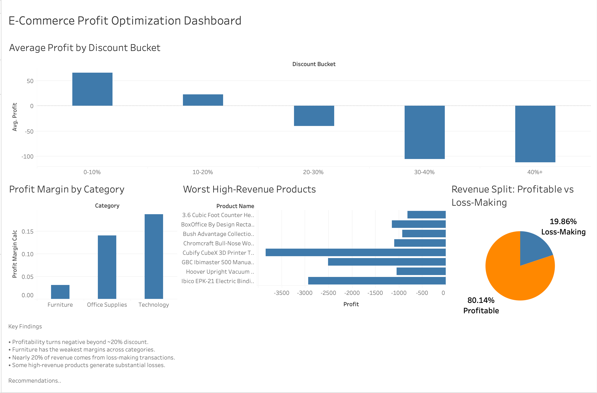

PROJECTS

Discount Profit Margin Analysis
Retail businesses often discount aggressively without tracking the profit cost. Analyzed ~10,000 retail transactions to map the relationship between discount levels and profit margins across product categories. Found that discounts above ~30% consistently produce negative margins — with Furniture and Tables turning unprofitable at even lower thresholds, and ~35–40% of all transactions already loss-making. Recommended category-specific discount caps (Furniture ≤20%, Technology ≤30%) and a shift to profitability-driven pricing for high-risk categories.
View on GitHub
Credit Card Customer Segmentation
Without behavioral segmentation, marketing spend is guesswork. Applied K-Means clustering (validated via Elbow Method + Silhouette Score) to identify 3 distinct customer segments based on spending behavior and usage patterns: high-value, low-engagement, and high-risk. Findings enable differentiated strategies — loyalty programs for high-value users, activation campaigns for low-engagement users, and proactive monitoring for high-risk segments.
View on GitHub
Customer Churn Analysis
Retaining customers is cheaper than acquiring them — but only if you know who's about to leave. Built a classification model (69% accuracy, F1 ~0.60) and identified contract type, tenure, and monthly charges as the top drivers of churn. Churn was heavily concentrated among low-tenure, month-to-month customers — making early-stage retention the highest-ROI intervention point.
View on GitHub
House Price Analysis
What actually drives housing prices beyond location? Built a regression model (R² ~0.88) to quantify the influence of property attributes on price. Construction quality and usable living area emerged as the strongest predictors — offering a data-backed lens for where property investment yields the most return.
View on GitHub
E-Commerce Profit Optimization Dashboard
Retail revenue growth can hide severe profitability inefficiencies. Conducted an end-to-end profitability analysis using SQL, Python, and Tableau on retail transaction data to identify discount-driven losses, weak-margin categories, and high-revenue loss-making products. Found that profitability consistently turns negative beyond ~20% discount levels, Furniture operates at significantly weaker margins than Technology, and nearly 20% of revenue originates from loss-making transactions. Built an interactive Tableau dashboard to visualize discount sensitivity, category-level profit margins, worst-performing high-revenue products, and revenue contribution from profitable vs loss-making sales. Recommended tighter discount controls, category-specific pricing strategies, and targeted review of high-loss products.
View on GitHub